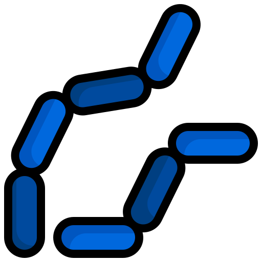
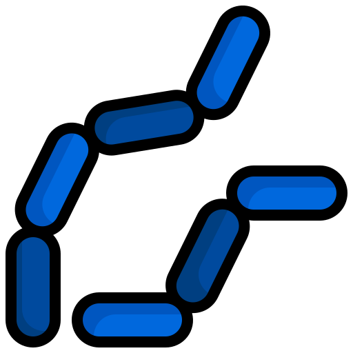
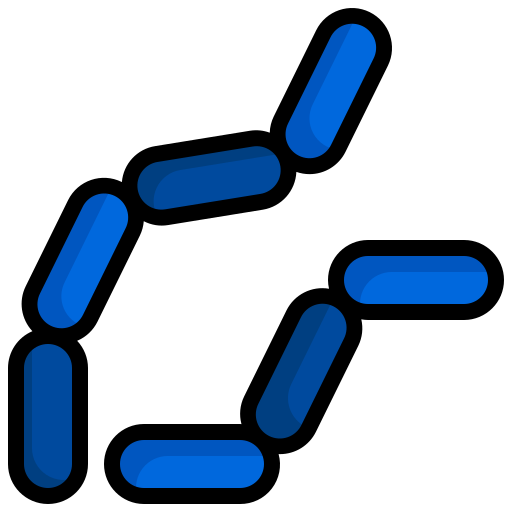

Julie Boudrie
CC1 et CC2 :
Cliquez sur le lien pour ouvrir les fichiers knités :
CC1
CC2
Comparative Analysis of Microbial Diversity Across Temperature Gradients in Hot Springs From Yellowstone and Iceland
Peter T. Podar, Zamin Yang, Snædís H. Björnsdóttir, Mircea Podar


 
